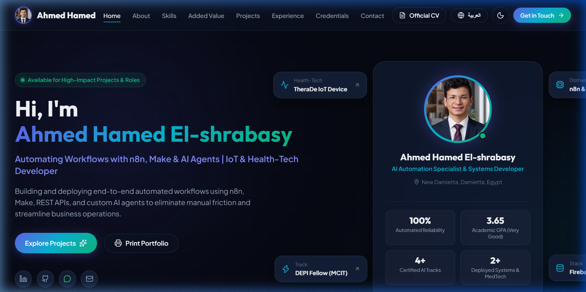
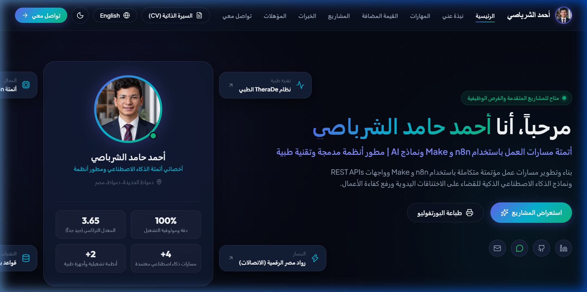
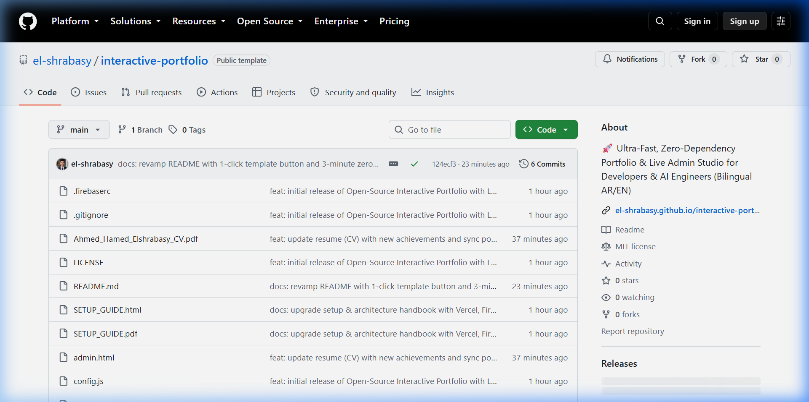
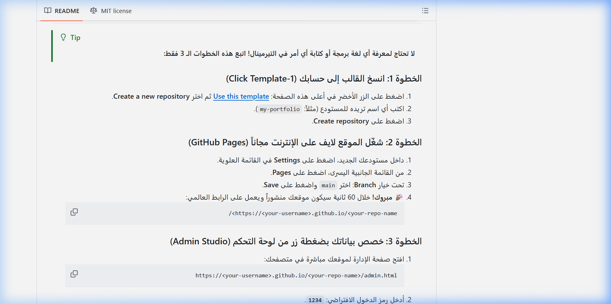
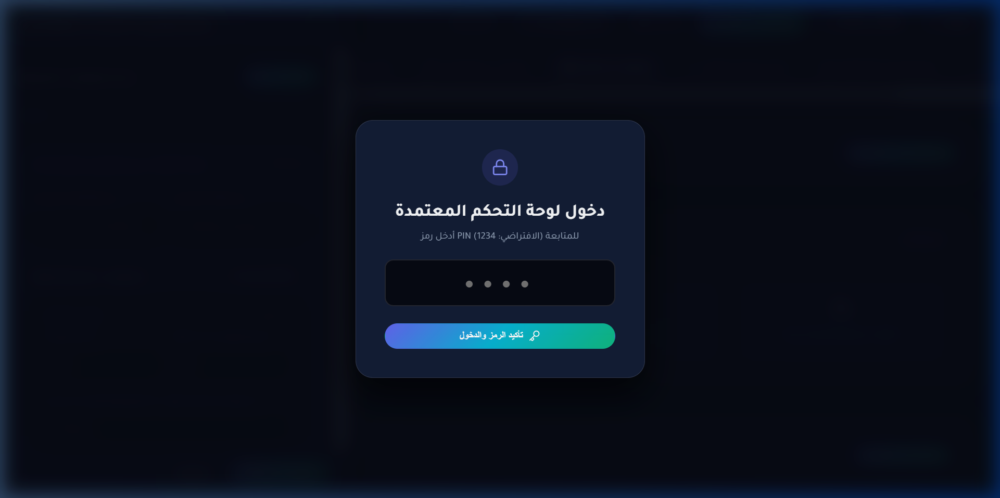
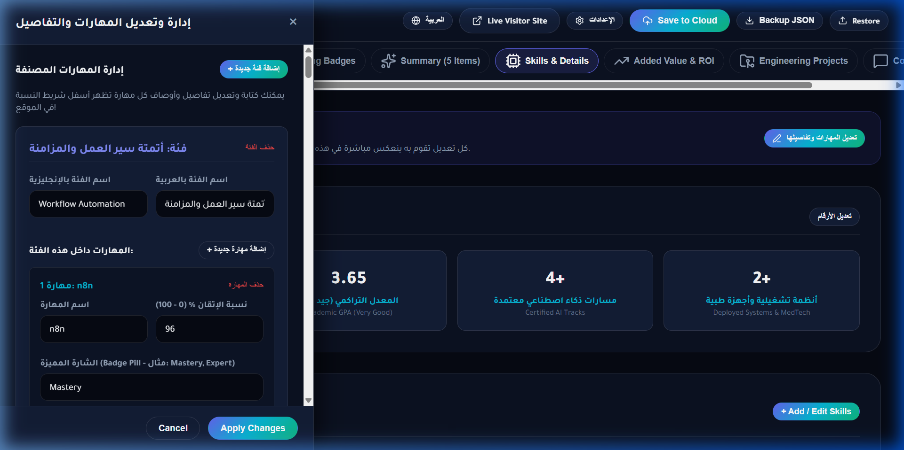
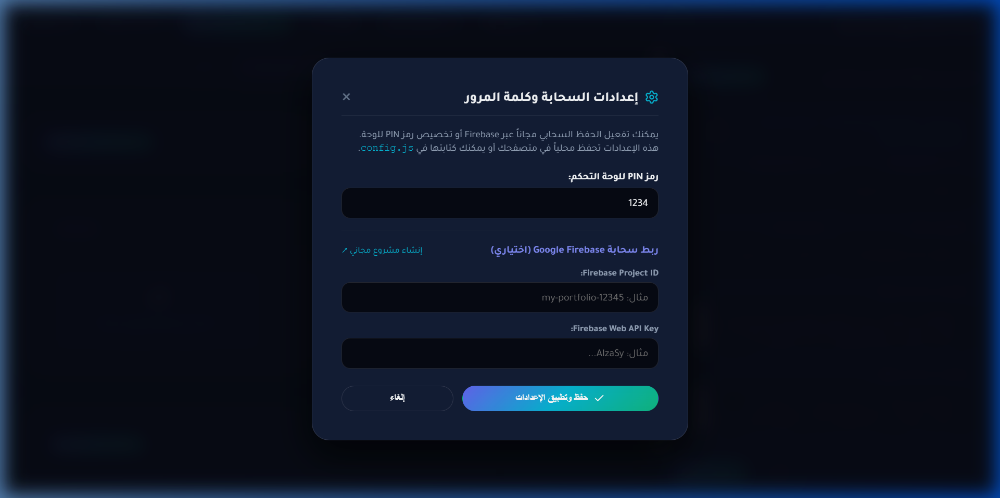
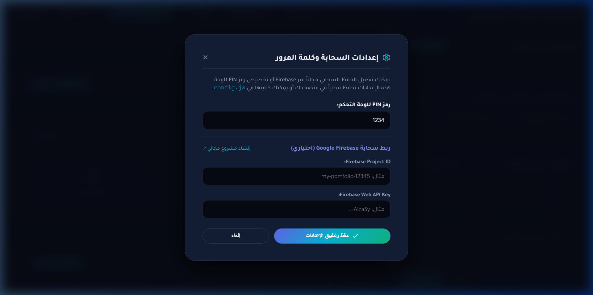

صُمم هذا المشروع ليحل مشكلة تعقيد المواقع الشخصية وإدارتها للمطورين ومهندسي الذكاء الاصطناعي. بدلاً من الاعتماد على فريم وركات ضخمة تتطلب صيانة وتحديثات مكتبات لا تنتهي، يعتمد النظام على Decoupled Static-First Architecture نقية بنسبة 100%:
| الملف | الوظيفة والمكونات الأساسية | التقنيات المستخدمة |
|---|---|---|
index.html |
الموقع الرئيسي للزوار: تصميم زجاجي عصري داكن (Dark Glassmorphic)، دعم ثنائي اللغة (AR/EN) مع تحويل اتجاه فوري (RTL/LTR)، مصفوفة حاسبة العائد الاستثماري (ROI Matrix)، نافذة تفاعلية للمشاريع، استعراض الخبرات والشهادات المعتمدة، وروابط التواصل. | HTML5, CSS Custom Properties, Lucide Icons, Vanilla JS, BroadcastChannel |
admin.html |
استوديو الإدارة التفاعلي المباشر (Visual Studio): يتيح تعديل أي بيانات بالكامل (النبذة، المهارات، المشاريع، الخبرات) بدون فتح كود، مع شاشة قفل أمنية بـ PIN وحفظ محلي وسحابي. | Pure Vanilla SPA, LocalStorage, Cloud Firestore REST API, JSON Exporter |
config.js |
ملف الإعدادات الموحد: يعزل رمز الحماية (PIN) ومعلومات المزامنة السحابية عن كود الموقع لسهولة التخصيص. | Decoupled Config System |
Ahmed_Hamed_Elshrabasy_CV.pdf |
السيرة الذاتية المعتمدة بصيغة ATS (صفحتين متطابقتين)، قابلة للتحميل بضغطة زر من الموقع. | Standard ATS Clean 2-Page Format |


يمكن لأي شخص نشر نسخته الخاصة مجاناً مدى الحياة وبدون كتابة سطر كود واحد عبر اتباع 4 خطوات دقيقة:

my-portfolio أو <username>.github.io).https://<your-github-username>.github.io/<repo-name>/https://<your-github-username>.github.io/<repo-name>/admin.html (رمز الدخول الافتراضي: 1234).

يحتوي القالب على استوديو إدارة متكامل مدمج (admin.html) لا يحتاج لأي لوحة تحكم خارجية أو اشتراكات شهرية:


admin.html وأدخل الرمز 1234 ثم اضغط دخول اللوحة.

localStorage). كما توفر زراً لتصدير ملف portfolio_data.json كنسخة احتياطية يمكنك رفعها لأي مكان أو مشاركتها.
إذا كنت تفضل استخدام منصات استضافة أخرى غير GitHub Pages، فإن المشروع متوافق 100% مع جميع مزودي الخدمات السحابية الثابتة:
interactive-portfolio..vercel.app وشهادة SSL تلقائية..netlify.app.
من لوحة تحكم Cloudflare، اختر Workers & Pages ثم Create application -> Pages واربط مستودعك، مع اختيار main كـ Production branch ومسار البناء /.
الملف المرفق Ahmed_Hamed_Elshrabasy_CV.pdf مصمم ليكون مطابقاً لمعايير ATS العالمية وموجزاً في صفحتين دقيقتين.
cvUrl في ملف config.js أو من داخل استوديو الإدارة admin.html.
إذا كنت تريد أن تنعكس تعديلاتك في admin.html لحظياً لجميع زوار موقعك حول العالم دون الحاجة لفتح GitHub:
projectId و apiKey وضعهما في نافذة الإعدادات داخل admin.html أو في config.js.هذا القسم مخصص للتلخيص والمراجعة السريعة، ومصاغ بأسلوب الأسئلة والأجوبة المركزة لتسهيل تحليله وتوليد بودكاست وفيديوهات توضيحية عبر Google NotebookLM:
ج: توفير بورتفوليو احترافي مفتوح المصدر وفائق السرعة لمهندسي الأتمتة والذكاء الاصطناعي والمطورين، يدمج بين الواجهة الجذابة (AR/EN) واستوديو إدارة تفاعلي يعمل بدون كود أو خوادم خلفية معقدة.
ج: يعتمد على استراتيجية التخزين الثنائي (Dual-Layer Storage Strategy): يعمل محلياً بالكامل عبر localStorage و BroadcastChannel، واختيارياً عبر واجهة REST API المباشرة لقواعد بيانات Firestore السحابية عبر بروتوكول HTTP GET/PATCH الصافي بدون أي SDKs ثقيلة.
ج: الرمز الافتراضي هو 1234. يمكن للمستخدم تغييره في أي لحظة من داخل لوحة التحكم بالضغط على زر ⚙️ الإعدادات في أعلى الصفحة وكتابة الرمز الجديد، أو عبر تعديل السطر 13 في ملف config.js.
ج: لا نهائياً! استضافة GitHub Pages مجانية مدى الحياة، ولوحة التحكم مدمجة محلياً، وقاعدة بيانات Firebase (إذا رغب المستخدم بتفعيلها) تقع بالكامل ضمن الباقة المجانية الدائمة (Free Spark Plan).